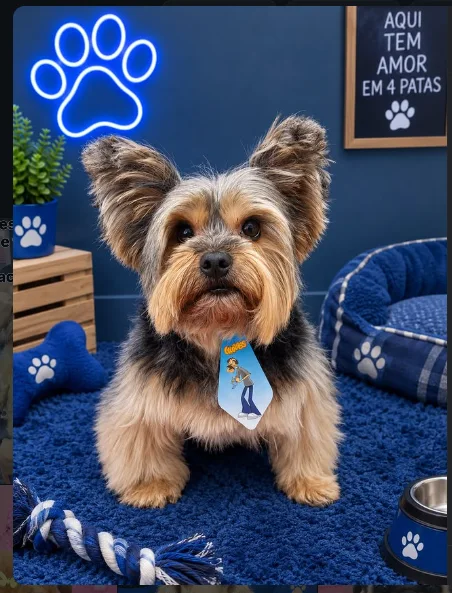
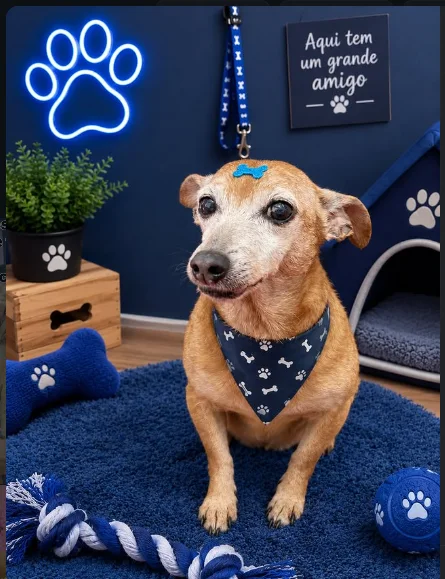
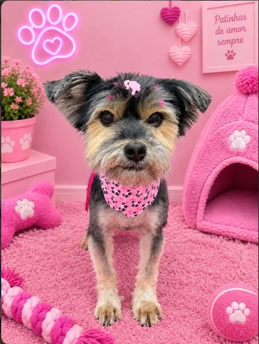
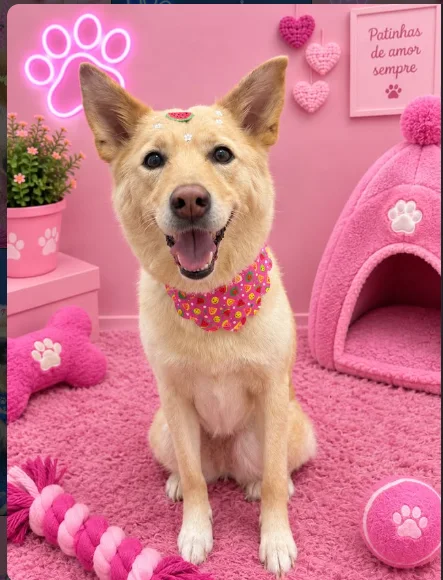
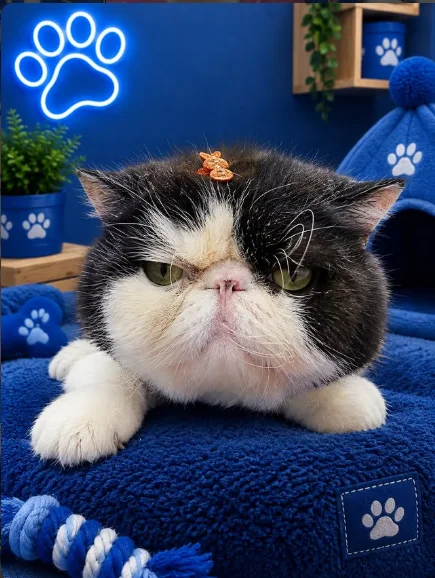
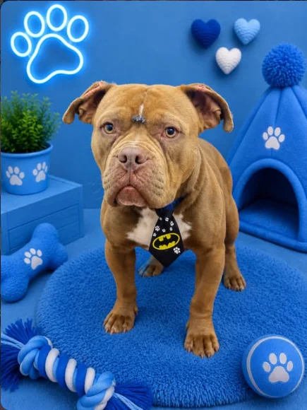
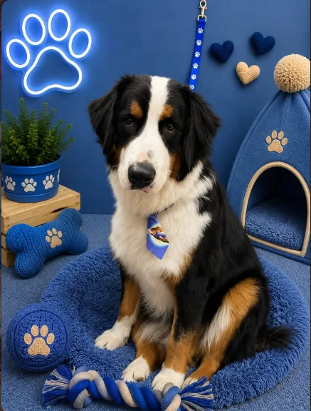
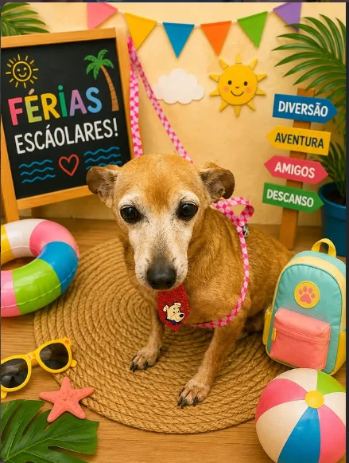
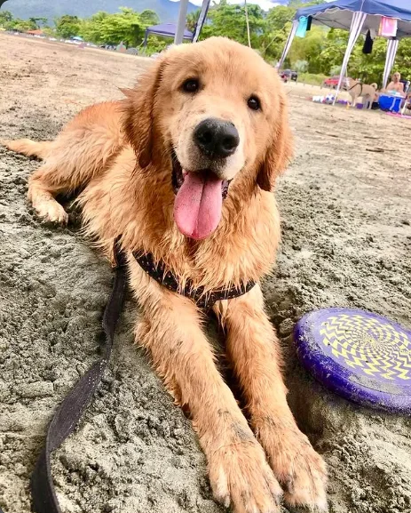

🛁
Banho com carinho
Um momento de limpeza, conforto e cuidado para deixar seu pet ainda mais feliz.
Banho e tosa com atenção, cuidado e muito amor em cada detalhe. Aqui, seu melhor amigo é tratado como parte da família!

Seu companheiro merece atenção especial. Consulte os serviços disponíveis e agende o melhor horário.
Um momento de limpeza, conforto e cuidado para deixar seu pet ainda mais feliz.
Cuidados de higiene e beleza respeitando as necessidades do seu melhor amigo.
Há relatos de clientes sobre o serviço de transporte. Consulte a disponibilidade e condições.
Alguns dos rostinhos encantadores que fazem parte da nossa história.








Avaliações compartilhadas no Google.
“Ficou top, a família gostou, pessoal gente boa de mais, recomendo!”
Paulo Gilberto“Eu amei tudo, a equipe tratou os meus bebês com todo o carinho do mundo.”
Natasha Reis“Tem serviço de busca e devolução do dog.”
Andy BrüningNa Vira-lata Mania, cada visita é uma oportunidade de oferecer carinho e atenção aos nossos amigos de quatro patas.
Estamos em Vila Osasco e adoramos receber novos aumigos e suas famílias!
Fale com a gente ↗Entre em contato para confirmar a disponibilidade e reservar seu horário.
Rua Casemiro José Marquês de Abreu, 257
Vila Osasco, Osasco – SP
CEP 06080-030
📞 (11) 96479-0608
Ver rota no Google Maps ↗Horários sujeitos a alterações em feriados. Confirme antes de visitar.